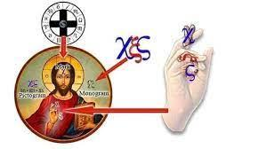

Contents
*1. The Spirit of the False Messiah/the Antichrist
*2. The doctrine of Incarnation [Yahushua is יהוה in the flesh] is the Spirit of the False Messiah
Meaning of certain words:
Elohim = God
יהוה = YHUH/YHVH/YHWH
Sha’ul = Paul
Yochanan = John
Ruach Ha Qodesh = Set-Apart Spirit
Yehudim = Jews
The Spirit of the Antichrist (or False Messiah) is anyone who elevates the image of a man known by his monogram i.e. Hesus Horus Krishna (Jesus H.
Christ) in their hearts as Elohim above יהוה! They will be given over by יהוה to believe a lie.
Tas’loniqim Bet/2Thessalonians 210 and with all deceit of unrighteousness in those perishing, because they did not receive the love of the truth, in order for them to be saved. 11And for this reason Elohim sends them a working of delusion, for them to believe the falsehood and lies, [Yoch/Joh_9:39, Yoch/Joh_12:40, Ma’asei/Act_7:42, Rom_1:24-28] 12 in order that all should be judged who did not believe the truth but have delighted in the unrighteousness.
Romiyim. Romans 124Therefore Elohim gave them up to uncleanness in the lust of their hearts, to disrespect their bodies among themselves, 25who changed the truth of Elohim into the falsehood, and worshipped and served what was created rather than the Creator, who is blessed forever. Aměn.
That very lie is that The Torah/Law has been abolished by the incarnation of Elohim in the image of Jesus H. Christ. The Spirit of The Antichrist is anyone who denies that Yahushua was a mere man (came in the flesh, fully human in every way). “Came in the flesh” is a Jewish Idiom for “born human” to two earthly parents! It does not say “Jesus is Elohim come in the flesh” as you have been told it says. Those who believe that have the Spirit of the False Messiah !
Yochanan Aleph/1 John 44Beloved, do not believe every spirit, but test the spirits to see whether they are from יהוה, because many false prophets have gone out into the world (claiming to be the incarnation of Elohim). 2By this you know the Spirit of יהוה: every spirit that confesses that Messiah Yahushua has ‘come in the flesh’ (which is an idiom for born to both a man and woman as it “the way of the flesh”, fully human in every way) is from יהוה;
Ib’rim/Hebrews 217For this reason he had to be made like them, fully human in every way, in order that he might become a merciful and faithful high priest in service to יהוה.
3 and every spirit that does not confess Yahushua has come in the flesh (but believes in the pagan myth of incarnation that he is a demi-Elohim) is not from יהוה; this is the spirit of the antichrist (The False Messiah is an image of a man named Jesus Christ who is worshipped as יהוה in the flesh. See below, Yahushua denied the incarnation totally) …
Philipiyim/Philippians 25Let this understanding be in you which was also in Yahushua the Messiah, 6though he was in the (human) image (reflection) of יהוה, did not count equality with יהוה a thing to be grasped, 7but made himself of no reputation, taking the form of a bondservant, and coming in the likeness of (all) men (he was human not Elohim).
Tas’loniqim Bet/2Thessalonians 21As to the coming of our Master יהושע Messiah and our gathering together to him, we ask you, brothers, 2not to become easily unsettled in mind or troubled, either by spirit or by word or by letter, as if from us, as if the day of יהוה has come. 3Let no one deceive you in any way, because the falling away is to come first, and the man of lawlessness is to be revealed, the son of destruction, [Dan_11:36-39] 4who opposes and exalts himself above all that is called Elohim or that is worshipped, so that he sits as Elohim in the Dwelling Place of Elohim, showing himself that he is Elohim. 5Do you not remember that I told you this while I was still with you? 6And now you know what restrains, for him to be revealed in his time. 7For the secret of lawlessness is already at work – only until he who now restrains comes out of the midst. 8And then the lawless one shall be revealed, whom the Master shall consume with the Spirit of His mouth [Yeshayahu/Isaiah_11:4] and bring to naught with the manifestation of His coming. 9The coming of the lawless one is according to the working of Satan, with all power and signs and wonders of falsehood
Continuing with Yochanan Aleph/1 John 4
6 We are of יהוה. He who knows יהוה hears us; he who is not of יהוה does not hear us. By this we know the spirit of truth and the spirit of error… 12 No one has seen יהוה at any time! (Because Yahushua is not יהוה in the flesh or a demi-Elohim).
There is the definition of The Spirit of Truth; those who know Yahushua was born human in every way and chosen as a High Priest to יהוה from among men and understand that NO ONE HAS SEEN יהוה because He cannot be found in the form of a man:
Bemidbar/Numbers 23:19
יהוה is not human, that he should lie, not a human being, that he should change his mind. Does he speak and then not act? Does he promise and not fulfil.
Hoshea 119I will not carry out my fierce anger, nor will I devastate Ephraim again. For I am יהוה, and not a man
The Spirit of the Antichrist is anyone who elevates the false image of Yahushua (known as Jesus) into an Elohim in their heart believing in the incarnation. That is The Spirit of The Antichrist because all pagan Christs were demi-gods. Those with The Spirit of the Antichrist will be given over to a depraved mind which is The Spirit of Error.
Christianity has created a human false image of Yahushua named “Jesus Christ” who is the False Messiah and taught “Jesus” as being the incarnation of Elohim and literally “Elohim in the flesh”.
Yochanan identified the names “Jesus” and “Christ” in Hazon/Revelation Chapter 13. Yochanan used the mark, the monogram, and the Christogram of Jesus Christ when he wrote down the Greek symbol
Hazon/Revelation 13 - The Beast out of the Sea
13 The dragon stood on the shore of the sea. And I saw a beast coming out of the sea (sea serpent )…17 so that they could not buy or sell unless they had the mark ( ), which is the name of the beast or (rather) the symbol of its name. 18 This calls for wisdom (to discern the Christogram IHS/Christ). Let the person who has (spiritual) eyes to see reckon up the (pictogram HES/JES of the) symbol of the beast that identifies him (by name Jesus Christ), for it is the symbol of a man. That symbol is

1.The Spirit of the False Messiah/the Antichrist
Anyone who elevates the image of a man known by his monogram i.e. Hesus Horus Krishna (Jesus H. Christ) in their hearts as Elohim above יהוה will be given over by יהוה to believe a lie. That very lie is that The Law has been abolished by the incarnation of
Elohim in the image of Jesus H. Christ. The Spirit of the False Messiah is anyone who denies that Yahushua was a mere man (came in the flesh):
Yochanan Aleph/1 John 44Beloved, do not believe every spirit, but test the spirits to see whether they are from יהוה, because many false prophets have gone out into the world (claiming to be the incarnation of Elohim). 2By this you know the Spirit of יהוה: every spirit that confesses that Messiah Yahushua has come in the flesh (a man) is from יהוה;
3and every spirit that does not confess Yahushua has come in the flesh (but says Jesus is Elohim or The Trinity) is not from יהוה; this is the spirit of the antichrist (or False Messiah. The False Messiah is an image of a man worshipped above יהוה as Elohim) … 12No one has seen יהוה at any time! (Because Yahushua is not יהוה in the flesh or a demi-Elohim).
Qorintiyim Aleph/1 Corinthians 15:21 For since death is through a MAN, resurrection of the dead is also through a MAN.
Anyone who elevates the false image of Yahushua (known as Jesus Christ) into a Elohim in their heart believing in the incarnation has The Spirit of the False Messiah…
Romiyim/Romans 121 because, although they knew יהוה (by what He created), they did not glorify יהוה as Elohim, nor were thankful, but became futile in their thoughts, and their foolish hearts were darkened (by יהוה who gave them over to The Spirit of the False Messiah). 22Professing to be wise, they became fools (filled with The Spirit of Error), 23and changed the glory of the incorruptible Elohim (יהוה who cannot die) into an image made like (a) corruptible man (who died. Jesus is a false image of Yahushua who was executed.)
2. The doctrine of Incarnation [Yahushua is יהוה in the flesh] is the Spirit of the False Messiah
I will address the reality of who Yahushua really was and confront the “sound bites” of scripture taken totally out of context by Christianity and in many cases mistranslated into English that are the foundation of this abomination called “incarnation”. Incarnated man-gods are the identifying feature of all pagan religions dating back to Babylon. The Creator revealed Himself in Scripture as the ONE AND ONLY Elohim not a Trinity, bi-entity, or god-man saviour.
The doctrine of incarnation violates explicit scripture by taking scripture out of context to build a doctrine of man through implication. Yahushua came in the flesh as a man, fully human in every way, was tempted by evil, was not born perfect, and called himself the son of man 87 times as he was truly the son of his earthly father Yoseph.
We have to ask ourselves what is the definition of flesh?
Strong's Number: 1320 Browse Lexicon
Original Word רָָּׂבָּש from (01319)
Basar TWOT - 291a
Definition
flesh of the body of humans of animals the body itself
male organ of generation (euphemism)
kindred, blood-relations
flesh as frail or erring (man against God)
all living things animals mankind
NAS Word Usage - Total: 264
anyone* 1, bodies 2, body 39, fatter* 1, flesh 176, gaunt* 3, lustful* 1, man 1, mankind 3, mankind* 1, meat 34, men 1, person 1
G4561
Original: σάρξ
Transliteration: sarx
Thayer Definition:
flesh (the soft substance of the living body, which covers the bones and is permeated with blood) of both man and beasts the body the body of a man used of natural or physical origin, generation or relationship
born of natural generation
the sensuous nature of man, "the animal nature"
without any suggestion of depravity
the animal nature with cravings which incite to sin
the physical nature of man as subject to suffering a living creature (because possessed of a body of flesh) whether man or beast the flesh, denotes mere human nature, the earthly nature of man apart from divine influence, and therefore prone to sin and opposed to God
Origin: probably from the base of G4563
Strong's Definition: Probably from the base of G4563; flesh (as stripped of the skin), that is, (strictly) the meat of an animal (as food), or (by extension) the body (as opposed to the soul (or spirit), or as the symbol of what is external, or as the means of kindred, or (by implication) human nature (with its frailties (physically or morally) and passions), or (specifically) a human being (as such): - carnal (-ly, + -ly minded), flesh ([-ly]).
יהוה, however, declares that He is not a man, He is not ‘the son of man’, He is invisible Spirit that cannot be contained in the human form or tempted by evil.
Bemidbar/Numbers 23:19
יהוה is not a man, that he should lie (Yahushua was fully human Ib’rim/Hebrews 2:17); neither the son of man (Yahushua was called the son of man in the NT 87 times), that he should repent (Yahushua was Mikvah’d i.e. baptized by Yochanan for repentance, his sin forgiven Zakaryah/Zachariah 3:4).
Hoshea 119I will not carry out my fierce anger, nor will I devastate Ephraim again. For I am יהוה, and not a man
Yochanan Aleph/1 John 4:1-3; 124Beloved do not believe every spirit, but test the spirits to see whether they are from יהוה, because many false prophets have gone out into the world (claiming to be the incarnation of יהוה). 2By this you know the Spirit of יהוה: every spirit that confesses that Messiah Yahushua has come in the flesh (a man) is from יהוה; 3and every spirit that does not confess Yahushua has come in the flesh (but says Yahushua is יהוה incarnate) is not from יהוה; this is the spirit of the antichrist (or False Messiah. The False Messiah is an image of a man worshipped above יהוה as יהוה) …12 No one has seen יהוה at any time (because they would die… Shemoth/Exodus 33:20)!
Qolasim/Colossians 1:15
The Son (all sons are the image of יהוה Bereshit/Genesis 1:26, Tehillim/Psalms 82:6) is the (human) image (reflection/proxy) of the invisible יהוה, the firstborn (this is where Yahushua is different from the rest of the sons of יהוה) over all (eternal) creation.
Given the explicit scripture that is contradicted by the implied doctrine of incarnation… we must in obedience to explicit declarations made by יהוה abandon the doctrine of “incarnation” as it is The Spirit of the False Messiah.
We will establish Yahushua as the human signatory (representative) to the covenant that bears his name The Covenant with Yahushua. Just like Mosheh was the human representative to the Mosaic Covenant, Adam to the Adamic Covenant, Noah to the Noahic Covenant, Avraham to the Avrahamic Covenant, David to the Davidic Covenant, and so forth.